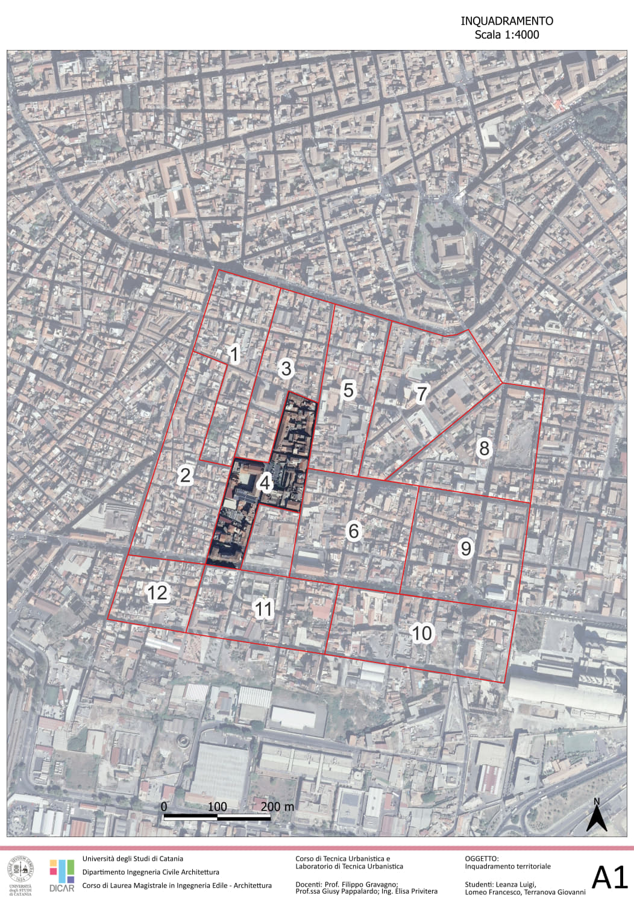
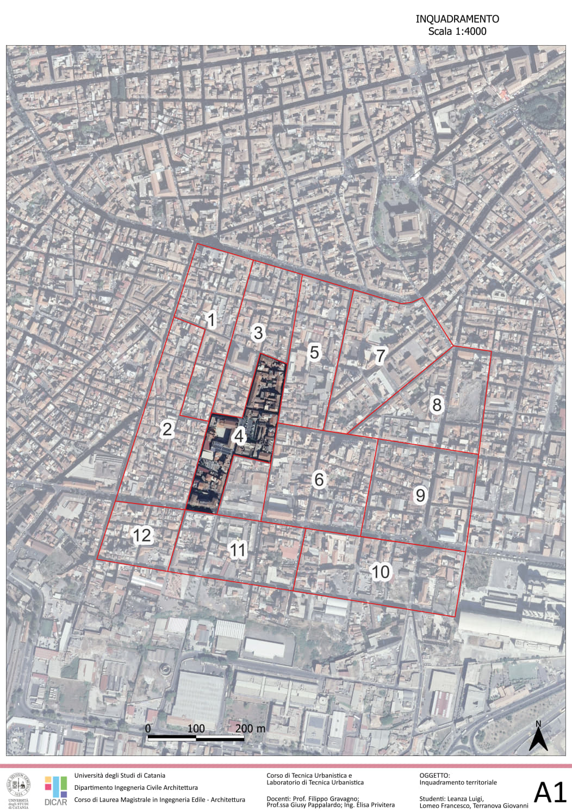

Rigenerazione urbana.
Strategia di rigenerazione urbana del quartiere di San Cristoforo a Catania. Essa è composta da una corposa parte di analisi ed alcuni interventi.
Colleghi:
Software utilizzati:



Strategia di rigenerazione urbana del quartiere di San Cristoforo a Catania. Essa è composta da una corposa parte di analisi ed alcuni interventi.
Colleghi:
Software utilizzati:
